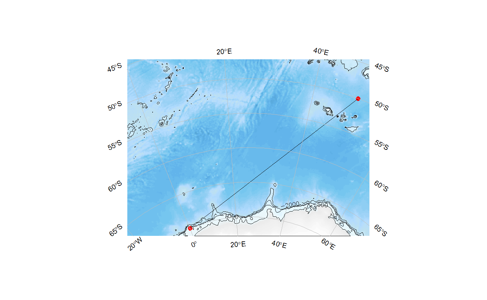
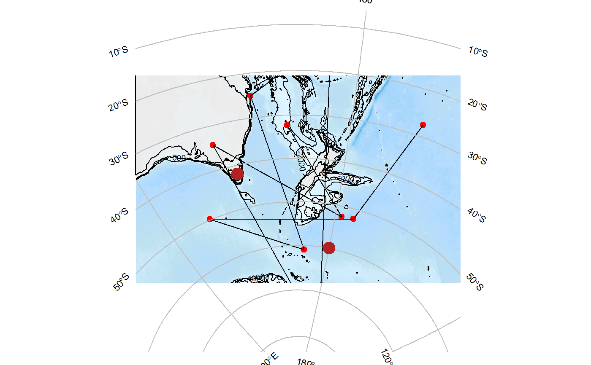
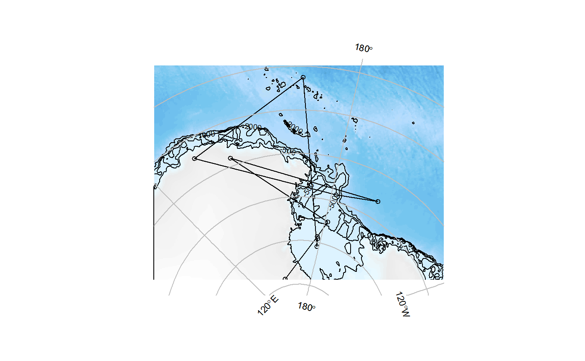
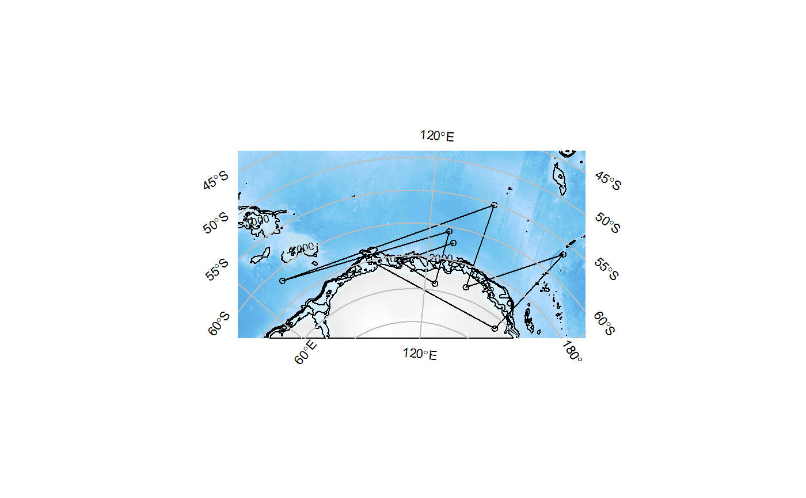

Provide minimal input information to get a default map. The simplest case is to run the function without any inputs at all and it will provide a random default.
SOauto_map(x, y, centre_lon = NULL, centre_lat = NULL, family = "stere", expand = TRUE, dimXY = c(300, 300), bathy = TRUE, coast = TRUE, input_points = TRUE, input_lines = TRUE, graticule = TRUE, buffer = 0.05, contours = TRUE, levels = c(-500, -1000, -2000), trim_background = TRUE, mask = FALSE, ppch = 19, pcol = 2, pcex = 1, bathyleg = FALSE, llty = 1, llwd = 1, lcol = 1, sample_type = sample(c("polar", "lonlat"), 1L))
| x | optional input data longitudes |
|---|---|
| y | optional input data latitudes |
| centre_lon | optional centre longitude (of the map projection, also used to for plot range if `expand = TRUE`) |
| centre_lat | as per `centre_lon` |
| family | optional projection family (default is `stere`ographic), or full PROJ string (see Details) |
| expand | re-compute range of plot to incorporate centre_lon and centre_lat with the data as a natural middle |
| dimXY | dimensions of background bathmetry (if used) default is 300x300 |
| bathy | logical: if |
| coast | logical: if |
| input_points | add points to plot (of x, y) |
| input_lines | add lines to plot (of x, y) |
| graticule | flag to add a basic graticule |
| buffer | fraction to expand plot range from that calculated (either from data, or from centre_lon/centre_lat _and_ data if `expand = TRUE`) |
| contours | logical: add contours? |
| levels | numeric: contour levels to use if |
| trim_background | crop the resulting bathymetry to its margin of valid values |
| mask | logical: if |
| ppch | set point character (default=19) |
| pcol | set point color (default=19) |
| pcex | set point cex (default=1) |
| bathyleg | optional bathymetry legend (default=FALSE). Note when |
| llty | set line type |
| llwd | set line width |
| lcol | set line color |
| sample_type | create random input data from a 'polar' or 'lonlat' domain |
An object of class SOauto_map, containing the data and other details required to generate the map. Printing or plotting the object will cause it to be plotted.
To input your data, use input locations as `x` (longitude) and `y` (latitude) values, there must be at least two locations.
Try families such as 'lcc', 'laea', 'gnom', 'merc', 'aea' if feeling adventurous.
Using `mask = TRUE` does not work well when the pole is included, so it's `FALSE` by default.
#>## save the result to explore later! protomap <- SOauto_map(runif(10, 60, 160), runif(10, -73, -50)) SOauto_map(runif(50, 40, 180), runif(50, -73, -10), family = "aea", centre_lat = -15, input_lines = FALSE)#> Warning: 6576 projected point(s) not finite